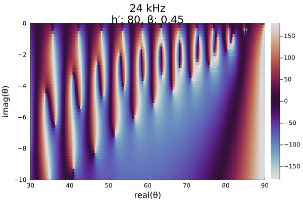
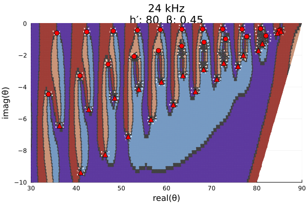

Mesh grid for mode finding - Part 2
In Mesh grid for mode finding - Part 1 we used LongwaveModePropagator.trianglemesh to initialize the GRPF grid for mode finding several different ionospheres and transmit frequencies. In part 2 we'll look at where grpf can fail for certain scenarios.
Naturally we want to be able to use the coarsest initial mesh grid as possible because the reflection coefficient has to be integrated through the ionosphere for every node of the grid. This step is by far the most computationally expensive operation of all of LongwaveModePropagator.
First, let's load the packages needed in this example.
using Plots
using Plots.Measures
using RootsAndPoles
using LongwaveModePropagator
using LongwaveModePropagator: QE, ME, solvemodalequation, trianglemesh, defaultmeshIn the LongwaveModePropagator tests suite, the segmented_scenario is known to miss roots if we use the same trianglemesh parameters (with Δr = deg2rad(0.5)) as in part 1 of the example.
Here we define the HomogeneousWaveguide from the second half of the segmented_scenario known to have the missing roots.
frequency = Frequency(24e3)
electrons = Species(QE, ME, z->waitprofile(z, 80, 0.45), electroncollisionfrequency)
waveguide = HomogeneousWaveguide(BField(50e-6, π/2, 0), electrons, Ground(15, 0.001))
me = PhysicalModeEquation(frequency, waveguide)
title = "24 kHz\nh′: 80, β: 0.45"First, let's simply compute the mode equation on a fine grid.
Δr = 0.2
x = 30:Δr:90
y = -10:Δr:0
mesh = x .+ 1im*y';As in part 1, we also define a function to compute the modal equation phase.
function modeequationphase(me, mesh)
phase = Vector{Float64}(undef, length(mesh))
Threads.@threads for i in eachindex(mesh)
f = solvemodalequation(deg2rad(mesh[i]), me)
phase[i] = rad2deg(angle(f))
end
return phase
end
phase = modeequationphase(me, mesh);
heatmap(x, y, reshape(phase, length(x), length(y))',
color=:twilight, clims=(-180, 180),
xlims=(30, 90), ylims=(-10, 0),
xlabel="real(θ)", ylabel="imag(θ)",
title=title,
right_margin=2mm)┌ Warning: Instability detected. Aborting └ @ SciMLBase ~/.julia/packages/SciMLBase/sRVBG/src/integrator_interface.jl:348

Let's run the grpf with Δr = 0.5.
zbl = deg2rad(complex(30.0, -10.0))
ztr = deg2rad(complex(89.9, 0.0))
Δr = deg2rad(0.5)
mesh = trianglemesh(zbl, ztr, Δr)
params = LMPParams().grpfparams
roots, poles, quads, phasediffs, tess, g2f = grpf(θ->solvemodalequation(θ, me),
mesh, PlotData(), params);
z, edgecolors = getplotdata(tess, quads, phasediffs, g2f)
zdeg = rad2deg.(z)
rootsdeg = rad2deg.(roots)
polesdeg = rad2deg.(poles)
twilightquads = [
colorant"#9E3D36",
colorant"#C99478",
colorant"#7599C2",
colorant"#5C389E",
colorant"#404040",
RGB(0.0, 0.0, 0.0)
]
img = plot(real(zdeg), imag(zdeg), group=edgecolors, palette=twilightquads, linewidth=1.5,
xlims=(30, 90), ylims=(-10, 0),
xlabel="real(θ)", ylabel="imag(θ)", legend=false,
title=title);
plot!(img, real(rootsdeg), imag(rootsdeg), color="red",
seriestype=:scatter, markersize=5);
plot!(img, real(polesdeg), imag(polesdeg), color="red",
seriestype=:scatter, markershape=:utriangle, markersize=5)Upon inspection, it is clear that there is a root/pole visible at the upper right corner of the domain in the fine mesh above that is not identified by grpf. In fact, the algorithm did not even try to refine the mesh in this region. That is because the root and pole pair are too closely spaced for the algorithm to know they are there. The discretized Cauchy argument principle (DCAP), upon which GRPF is based, can only identify the presence of roots and poles if there are an unequal number of them. If the complex phase change around a tessellation contour is equal to 0, there may be no roots or poles in the contoured region, or there may be an equal number of roots and poles.
This run identified 20 roots and 19 poles. Let's run grpf again with a finer resolution of Δr = 0.2.
Δr = deg2rad(0.2)
mesh = trianglemesh(zbl, ztr, Δr)
roots, poles, quads, phasediffs, tess, g2f = grpf(θ->solvemodalequation(θ, me),
mesh, PlotData(), params);
z, edgecolors = getplotdata(tess, quads, phasediffs, g2f)
zdeg = rad2deg.(z)
rootsdeg = rad2deg.(roots)
polesdeg = rad2deg.(poles)
img = plot(real(zdeg), imag(zdeg), group=edgecolors, palette=twilightquads, linewidth=1.5,
xlims=(30, 90), ylims=(-10, 0),
xlabel="real(θ)", ylabel="imag(θ)", legend=false,
title=title);
plot!(img, real(rootsdeg), imag(rootsdeg), color="red",
seriestype=:scatter, markersize=5);
plot!(img, real(polesdeg), imag(polesdeg), color="red",
seriestype=:scatter, markershape=:utriangle, markersize=5)
This higher resolution initial grid has identified 22 roots and 21 poles. Zooming in on the upper right region, we can see that the previously missing roots and poles are very closely spaced.
img = plot(real(zdeg), imag(zdeg), group=edgecolors, palette=twilightquads, linewidth=1.5,
xlims=(80, 90), ylims=(-2, 0),
xlabel="real(θ)", ylabel="imag(θ)", legend=false,
title=title);
plot!(img, real(rootsdeg), imag(rootsdeg), color="red",
seriestype=:scatter, markersize=5);
plot!(img, real(polesdeg), imag(polesdeg), color="red",
seriestype=:scatter, markershape=:utriangle, markersize=5)
Roots are frequently located closely to poles in the upper right of the domain for a variety of ionospheres. To ensure they are captured, LongwaveModePropagator.defaultmesh uses a spacing of Δr = deg2rad(0.5) for most of the mesh, but a spacing of Δr = deg2rad(0.15) for the region with real greater than 75° and imaginary greater than -1.5°.
mesh = defaultmesh(frequency)
meshdeg = rad2deg.(mesh)
img = plot(real(meshdeg), imag(meshdeg), seriestype=:scatter,
xlabel="real(θ)", ylabel="imag(θ)",
size=(450,375), legend=false);
plot!(img, [30, 90], [0, 0], color="red");
plot!(img, [80, 90], [-10, 0], color="red")This page was generated using Literate.jl.